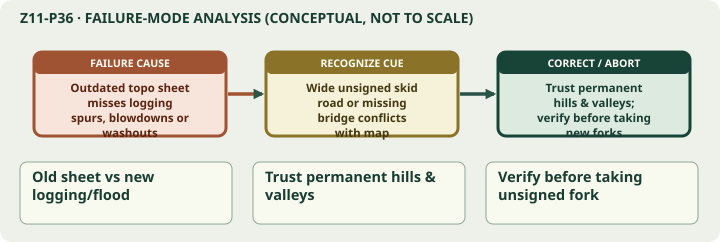

Z11-P36 · Navigation, weather and rescue · New manuscript
Spot map-to-ground discrepancies caused by outdated sheets or logging
Recognize when human land-use changes, storm blowdowns or map age make printed roads and trails diverge from reality.
When it applies · Forests with active logging roads, seasonal beaver activity, wildfire scars or trail reroutes.
Equipment · Most recent available map, local ranger/agency trail alerts and terrain-reading habit.

Actions
- Check the map publication year and land-agency trail updates before departing—logging spurs, temporary skid trails, removed bridges and rerouted trails frequently outpace printed maps.[N01, E01]
- Trust permanent natural landforms (major hills, river valleys, solid bedrock ridges and large lake basins) far more than dashed trail lines, temporary timber roads or wooden footbridges when discrepancies arise.[N01, N03]
- Mark observed washouts or reroutes cleanly on your trip notes and verify where an unsigned new fork leads before committing the group to it.[N01, E01, ED]
Failure recognition · Turning onto a fresh unmarked logging skid road that looks wider than the old footpath and assuming it is the mapped main trail.[N01, E01]
Verify · Confirm both trail signage AND underlying contour/valley shapes match the map after passing any recent logging or storm-damaged area.[N01, N03, ED]
Stop or change course · When an unexpected fork, missing bridge or dense blowdown severs map agreement, stop at the last verified point and backtrack cleanly or consult current official routes.[N01, T06, N09]
Evidence and editorial notes
- E01 · Minnesota DNR · Safety in State Forests (current web edition)
- Section: Before your trip and while visiting · Conditions: State-forest travel and backcountry planning
Support: Know the route, check conditions, carry navigation and safety equipment and share trip details.
Limitations: Conditions and trail maintenance vary seasonally across forest units. · Conflicting evidence: None; aligns with NPS-H.
Editorial note: Foundation for trip planning and pre-departure risk checks. · Specialist reviewer: Land management and search and rescue
Primary source · checked 2026-11-24 - N01 · USGS · US Topo Maps for America (current web edition)
- Section: US Topo Maps > Coordinate Grids, Scale and Currency · Conditions: Map reading and trip planning in the United States
Support: USGS topographic maps provide elevation contours, hydrography, roads, land cover and scale/date metadata; check publication date because trails, roads and structures change over time.
Limitations: Historical topo sheets (such as 1965 Ely quadrangle) illustrate symbols only and never establish current routes or declination. · Conflicting evidence: None; aligns with USGS-MAP-R and NOAA-D.
Editorial note: Grounds map margin, scale, date and historical-excerpt limits in Z11. · Specialist reviewer: Cartography and navigation
Primary source · checked 2026-11-24 - N03 · USGS · What is a Topographic Map (current web edition)
- Section: What is a Topographic Map > Contours and Relief · Conditions: Matching three-dimensional terrain shapes to two-dimensional contour lines
Support: Closed contour rings denote peaks or depressions (hachured), V-patterns point uphill in valleys/drainages and wide spacing marks gentle slopes while tight spacing marks cliffs or steep grades.
Limitations: Dense forest canopy or snow drifts can obscure subtle terrain features shown on the map. · Conflicting evidence: None; core topographic terrain-association evidence.
Editorial note: Supports ridge, valley, saddle and handrail terrain-interpretation cards. · Specialist reviewer: Navigation and cartography
Primary source · checked 2026-11-24
Current assessment · A04-N03 (2026-11-25) · Open: support partial or missing (A04): Contours and depression symbols supported. The broad V/uphill and cliff inference depend on drawing context and saddle/ridge distinction; require dedicated examples. Limits: Specialist review PENDING (Navigation and cartography); publication HOLD. All release decisions pending. - N09 · NPS · Outdoor Emergency Plan (current web edition)
- Section: If You Get Lost; Seek help · Conditions: Lost hiker who cannot safely retrace steps and has sought rescue
Support: Report last known location and landmarks. Stay put while awaiting help unless an immediate threat requires getting to safety.
Limitations: Navigation, signaling method and safe movement depend on site and responder instructions. · Conflicting evidence: See A02 claim audit for boundaries.
Editorial note: Core evidence for lost-person psychology, signaling and SAR coordination cards. · Specialist reviewer: Search and rescue
Primary source · checked 2026-11-24 - T06 · NPS · Outdoor Emergency Plan (current web edition)
- Section: If you get lost or hurt; call for help · Conditions: Outdoor US emergency
Support: Communicate location, last known point, situation and needs. Stay put when unable to establish a safe route unless immediate danger requires movement.
Limitations: Cell signal is unreliable in backcountry terrain; pre-trip plans bridge communication gaps. · Conflicting evidence: None; core lost-person decision rule.
Editorial note: Foundation for stay/signal/move and dispatch handoff cards. · Specialist reviewer: Search and rescue
Primary source · checked 2026-11-24
Source lineage · USGS US Topo and MN DNR safety; new manuscript · Classification · New manuscript.